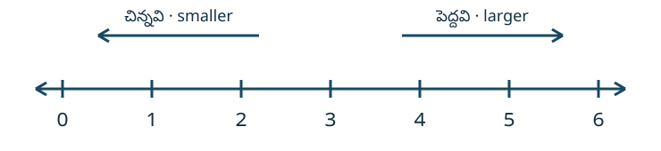

ముందుగా ఎక్కడ మొదలుపెట్టాలి? · Placement bridge
ఇది 3–10 తరగతుల అభ్యాసకుల కోసం రూపొందిస్తున్న పునాది అభ్యాస సేతువులో మొదటి చిన్న భాగం. ఇది తరగతిని నిర్ణయించే ప్రమాణీకృత పరీక్ష కాదు. ప్రతి ప్రశ్నను చదివి, జవాబుతో పాటు కారణం రాయండి. చదవడంలో సహాయం కావాలంటే ఉపాధ్యాయుడు ప్రశ్నను చదివి వినిపించవచ్చు; గణిత జవాబును చెప్పకూడదు. సమయ పరిమితి లేదు. కాలిక్యులేటర్ అవసరం లేదు.
Original bridge additions, not OpenStax assessment items. Ask for an answer and a reason. Reading support is allowed. This is a skill-routing aid, not a validated grade-placement test. No learner data is collected.
ప్రారంభ ప్రశ్నలు · Entry check
- D01 · K1 ఖాళీ పెట్టెలో ఎన్ని బంతులు ఉన్నాయి? ఆ సంఖ్య సహజ సంఖ్యా, పూర్ణాంకమా? An empty box contains how many balls? Classify that number.
- D02 · K1 4 సహజ సంఖ్యా, పూర్ణాంకమా, లేక రెండూనా? కారణం చెప్పండి. Is 4 a counting number, a whole number, or both?
- D03 · K2 1/4, 3, 5.2, 15 లో పూర్ణాంకాలను ఎంచుకోండి. మిగిలినవి ఎందుకు కావో చెప్పండి. Select the whole numbers and explain the exclusions.
- D04 · K2 “6/3 ను భిన్నం రూపంలో రాశారు కాబట్టి అది పూర్ణాంకం కాదు” అని రవి అన్నాడు. ఇది సరైనదా? Does fractional notation alone mean that 6/3 is not a whole number?
- D05 · K3 సంఖ్యారేఖపై 2, 5 లో కుడివైపు ఏది ఉంటుంది? 2 __ 5 లో < లేదా > రాయండి. Which lies farther right? Choose the comparison sign.
- D06 · K3 0 నుంచి కుడివైపు ఒక్కొక్క ప్రమాణం చొప్పున మూడు అడుగులు వెళ్తే ఏ బిందువుకు చేరతాం? దాని నిరూపకం ఏమిటి? Move three unit steps right from 0; name the coordinate.
- D07 · K4 305 లో 3, 0, 5 అంకెల స్థాన విలువలు రాయండి. 305 = __ + __ + __ పూర్తి చేయండి. Write each digit's place value and expand 305.
- D08 · K4 537, 735 లో పెద్ద సంఖ్య ఏది? రెండింటిలో అంకెలు ఒకటే అయినా విలువలు ఎందుకు వేరుగా ఉన్నాయి? Compare 537 and 735 using place value.
జవాబుల ఆధారంగా దారి · Skill-based routing
ప్రతి నైపుణ్యానికి రెండు ప్రశ్నలు ఉన్నాయి: K1 = D01–D02; K2 = D03–D04; K3 = D05–D06; K4 = D07–D08. జవాబు, కారణం రెండూ సరైనప్పుడు మాత్రమే ఆ ప్రశ్నకు 1 ఇవ్వండి. సరైన జవాబు ఉన్నా కారణం లేకపోతే “కారణం అడగాలి” అని గుర్తించి ప్రస్తుతం 0 ఇవ్వండి. ఊహించిన తప్పును విద్యార్థి చేసిన తప్పుగా భావించకండి; ముందుగా వివరణ అడగండి.
ఒక నైపుణ్యంలో 2/2 వస్తే దాని సమాన స్థాయి మళ్లీ-తనిఖీ ప్రశ్నలు చేయండి. 0/2 లేదా 1/2 వస్తే కింద ఉన్న ఆ నైపుణ్యపు సహాయం చదివి, తరువాత మళ్లీ తనిఖీ చేయండి. మొత్తం మార్కుల ఆధారంగా ఒక్క నైపుణ్యంలోని లోటును దాచకండి. R01–R08 లో సంబంధిత రెండు ప్రశ్నలూ కారణాలతో సరిగా చేసినప్పుడు మాత్రమే ఆ నైపుణ్యాన్ని ఈ చిన్న యూనిట్కు సరిపడినట్లు గుర్తించండి. అన్ని నాలుగు నైపుణ్యాలు సిద్ధమైతే తదుపరి భాగం “స్థాన విలువతో సంఖ్యలను నమూనాలుగా చూపడం”కు వెళ్లండి. లేదంటే అవసరమైన సహాయాన్ని మళ్లీ తీసుకోండి.
మళ్లీ-తనిఖీలో K1 = R01–R02; K2 = R03–R04; K3 = R05–R06; K4 = R07–R08.
For each skill, an entry score of 0/2 or 1/2 leads to the relevant support; a score of 2/2 leads directly to the recheck. Mark that skill ready for this small unit only after both corresponding recheck items are answered correctly with explanations. An earlier entry score below 2/2 does not prevent readiness after support. The threshold is an editorial rule, not an empirically validated mastery cut score. Keep results on paper; the reader stores nothing.
తప్పు ఎక్కడ వచ్చిందో చూద్దాం · Explain and repair
- K1 · సున్నా కూడా ఒక సంఖ్య
- “ఏమీ లేవు కాబట్టి సంఖ్య లేదు” అనడం పొరపాటు. వస్తువులు లేని పరిమాణాన్ని 0 సూచిస్తుంది. 1, 2, 3, … సహజ సంఖ్యలు. వీటితో 0 ను చేర్చితే 0, 1, 2, 3, … పూర్ణాంకాలు. కాబట్టి ప్రతి సహజ సంఖ్య పూర్ణాంకం కూడా; కానీ 0 సహజ సంఖ్య కాదు.
- K2 · రూపం కాదు, విలువను చూడాలి
- 1/4 అనేది 0, 1 మధ్య ఉంటుంది; 5.2 అనేది 5, 6 మధ్య ఉంటుంది. అందువల్ల ఇవి పూర్ణాంకాలు కావు. అయితే 6/3 = 2. భిన్న రూపంలో ఉన్నా దాని విలువ పూర్ణాంకం కావచ్చు. అలాగే 4.0 = 4. కేవలం గీత లేదా దశాంశ బిందువు ఉందని నిర్ణయించకండి.
- K3 · దిశ, దూరం, గుర్తు
- ఈ పాఠంలో సంఖ్యారేఖపై వరుస పూర్ణాంకాలను ఒక ప్రమాణం దూరంలో గుర్తిస్తాం. కుడికి వెళ్తే సంఖ్య పెరుగుతుంది. 2 నుంచి మూడు ప్రమాణాలు కుడికి వెళ్తే 5. కాబట్టి 2 < 5. పోలిక చిహ్నంలోని విస్తరించిన వైపు పెద్ద సంఖ్యవైపు ఉంటుంది. 0 అనే బిందువునే మూలబిందువు అంటాం.
- K4 · స్థాన విలువ — తదుపరి పాఠానికి వంతెన
- కుడి నుంచి స్థానాలు: ఒకట్లు (ones), పదులు (tens), వందలు (hundreds). 10 ఒకట్లు = 1 పది; 10 పదులు = 1 వంద. 305 లో 3 వందలు = 300; 0 పదులు = 0; 5 ఒకట్లు = 5. మధ్యలోని 0 ను తొలగిస్తే 35 వస్తుంది; అది 305 కాదు. ఒకే సంఖ్యలో అంకెలు ఉన్న రెండు సంఖ్యలను పోల్చేటప్పుడు ఎడమ నుంచి మొదట భిన్నంగా ఉన్న స్థానాన్ని చూడండి. ఇవి మూలపాఠంలోని తదుపరి భాగానికి పరిచయంగా ఇక్కడ చేర్చిన వివరణలు.
ప్రారంభ ప్రశ్నల పూర్తి సాధనలు · Worked entry solutions
- D01: బంతులు లేవు, కాబట్టి సంఖ్య 0. సహజ సంఖ్యల జాబితా 1 వద్ద మొదలవుతుంది, కనుక 0 అందులో లేదు. పూర్ణాంకాల జాబితా 0 వద్ద మొదలవుతుంది, కనుక 0 పూర్ణాంకం.
- D02: 1, 2, 3, 4 అంటూ లెక్కించగలం, కాబట్టి 4 సహజ సంఖ్య. పూర్ణాంకాల్లో సహజ సంఖ్యలన్నీ ఉంటాయి. అందువల్ల 4 రెండూ అవుతుంది.
- D03: 3, 15 పూర్ణాంకాలు. 0 < 1/4 < 1; 5 < 5.2 < 6. 1/4, 5.2 పూర్ణాంకాల గుర్తుల మధ్య ఉన్నాయి, వాటి వద్ద లేవు. కాబట్టి వాటిని ఎంచుకోము.
- D04: రవి మాట సరైంది కాదు. 6 ను 3 సమాన భాగాలుగా పంచితే ఒక్కో భాగం 2; అంటే 6/3 = 2. 2 సహజ సంఖ్య కూడా, పూర్ణాంకం కూడా. సంఖ్య విలువను చూడాలి, రాసిన రూపాన్ని మాత్రమే కాదు.
- D05: 2 నుంచి 3, 4, 5 వరకు కుడికి వెళ్తాం. 5 కుడివైపు ఉంది, అందువల్ల 5 పెద్దది. సరైన పోలిక 2 < 5; విస్తరించిన వైపు 5 వైపు ఉంది.
- D06: మొదటి అడుగు 1 వద్దకు, రెండోది 2 వద్దకు, మూడోది 3 వద్దకు. చేరిన బిందువు నిరూపకం 3. మొదట నిల్చున్న 0 ను ఒక అడుగుగా లెక్కించకూడదు.
- D07: 3 వందల స్థానంలో ఉంది: 3 × 100 = 300. 0 పదుల స్థానంలో ఉంది: 0 × 10 = 0. 5 ఒకట్ల స్థానంలో ఉంది: 5 × 1 = 5. కాబట్టి 305 = 300 + 0 + 5.
- D08: రెండూ మూడు అంకెల సంఖ్యలు. వందల స్థానంలో 537 కు 5, 735 కు 7 ఉన్నాయి. 7 వందలు 5 వందల కంటే ఎక్కువ, కాబట్టి 735 > 537. 537 = 500 + 30 + 7; 735 = 700 + 30 + 5. అంకెల స్థానాలు మారితే వాటి స్థాన విలువలు మారుతాయి.
సహాయం తరువాత మళ్లీ తనిఖీ · Recheck
- R01 · K1 పక్షులన్నీ కొమ్మ నుంచి ఎగిరిపోయాయి. మిగిలిన పక్షుల సంఖ్యను రాసి వర్గీకరించండి.
- R02 · K1 8 సహజ సంఖ్యా, పూర్ణాంకమా, లేక రెండూనా? ఎందుకు?
- R03 · K2 2/3, 7, 8.8, 13 లో పూర్ణాంకాలను ఎంచుకుని, మిగిలినవాటిని ఎందుకు ఎంచుకోలేదో చెప్పండి.
- R04 · K2 12/4 పూర్ణాంకం అవుతుందా? ముందుగా దాని విలువను కనుగొనండి.
- R05 · K3 సంఖ్యారేఖపై 1, 4 లో కుడివైపు ఏది? 1 __ 4 పూర్తి చేయండి.
- R06 · K3 0 నుంచి కుడికి నాలుగు ప్రమాణాలు వెళ్లిన బిందువు నిరూపకం ఏమిటి? అడుగులను చూపండి.
- R07 · K4 402 లో ప్రతి అంకె స్థాన విలువను రాయండి. సంఖ్యను విస్తరించండి.
- R08 · K4 426, 624 లో ఏది పెద్దది? వందల స్థానాన్ని ఉపయోగించి వివరించండి.
మళ్లీ-తనిఖీ పూర్తి సాధనలు · Worked recheck solutions
- R01: పక్షులు ఏవీ మిగలలేదు, కాబట్టి 0. ఈ పాఠం నిర్వచనం ప్రకారం 0 పూర్ణాంకం; సహజ సంఖ్య కాదు.
- R02: 8 అనేది 1, 2, 3, … జాబితాలో ఉంటుంది. కాబట్టి సహజ సంఖ్య. ప్రతి సహజ సంఖ్య పూర్ణాంకం కూడా, అందువల్ల రెండూ.
- R03: 7, 13 పూర్ణాంకాలు. 0 < 2/3 < 1; 8 < 8.8 < 9. మిగిలిన రెండు సంఖ్యలు వరుస పూర్ణాంకాల మధ్య ఉన్నాయి కాబట్టి పూర్ణాంకాలు కావు.
- R04: 12 ÷ 4 = 3, ఎందుకంటే 4 × 3 = 12. 3 పూర్ణాంకం. అందువల్ల 12/4 విలువ కూడా పూర్ణాంకమే.
- R05: 1 నుంచి 2, 3, 4 వరకు కుడికి వెళ్తాం. 4 పెద్దది, కాబట్టి 1 < 4.
- R06: 0 → 1 → 2 → 3 → 4. నాలుగు అడుగుల తరువాత నిరూపకం 4. ఐదు సంఖ్యా గుర్తులు కనిపించినా కదిలిన అడుగులు నాలుగే.
- R07: 4 × 100 = 400; 0 × 10 = 0; 2 × 1 = 2. కాబట్టి 402 = 400 + 0 + 2. 0 పదుల స్థానాన్ని నిలిపి ఉంచుతుంది; దానిని తొలగిస్తే 42 అవుతుంది.
- R08: రెండూ మూడు అంకెల సంఖ్యలు. 624 లో 6 వందలు, 426 లో 4 వందలు ఉన్నాయి. 6 > 4 కాబట్టి 624 > 426. విస్తరణలు 600 + 20 + 4, 400 + 20 + 6 కూడా ఇదే చూపుతాయి.
మూలపాఠపు “మీరే ప్రయత్నించండి” ప్రశ్నలకు పూర్తి వివరణలు
కింది రెండు వివరణలు ఈ సేతువు కోసం చేర్చినవి. మూలంలో ఉన్న సంక్షిప్త జవాబులు యథాతథంగా అనువాద భాగంలో ఉన్నాయి.
fs-id3298473: జాబితా 0, 2/3, 2, 9, 11.8, 241, 376. 2, 9, 241, 376 లెక్కించడానికి ఉపయోగించే సంఖ్యలు, కాబట్టి సహజ సంఖ్యలు. పూర్ణాంకాల జాబితా కోసం వీటికి 0 ను చేర్చాలి: 0, 2, 9, 241, 376. 2/3 అనేది 0, 1 మధ్య; 11.8 అనేది 11, 12 మధ్య. కాబట్టి ఈ రెండూ ఏ జాబితాలోనూ చేరవు.
fs-id1786026: జాబితా 0, 5/3, 7, 8.8, 13, 201. సహజ సంఖ్యలు 7, 13, 201. వీటితో 0 ను చేరిస్తే పూర్ణాంకాలు 0, 7, 13, 201. 5/3 = 1 + 2/3, కాబట్టి అది 1, 2 మధ్య ఉంటుంది; 8.8 అనేది 8, 9 మధ్య. అందువల్ల 5/3, 8.8 సహజ సంఖ్యలూ కావు, పూర్ణాంకాలూ కావు.
తదుపరి మూలభాగం: m81243#fs-id2340048, Model Whole Numbers. నమూనాలు, వందలు–పదులు–ఒకట్లు, తరువాత స్థాన విలువ. ఇంకా అనువదించని భాగాలను ఈ పైలట్ పూర్తిచేసినట్లు పరిగణించవద్దు.
మూలపాఠం అనువాదం · OpenStax source subsection
సహజ సంఖ్యలు, పూర్ణాంకాలను గుర్తించడం
బీజగణితం నేర్చుకోవడం ఒక భాష నేర్చుకోవడం లాంటిది. మొదట కొన్ని ప్రాథమిక పదాలను నేర్చుకుంటాం. తరువాత కొత్త పదాలను చేర్చుకుంటూ వెళ్తాం. ఆ పదాలు సులభంగా అర్థమయ్యే వరకు తరచూ సాధన చేయాలి. వాటిని ఎంత ఎక్కువగా ఉపయోగిస్తే అంత బాగా పరిచయమవుతాయి.
పదాలనూ భావాలనూ తెలియజేయడానికి బీజగణితంలో సంఖ్యలు, చిహ్నాలు వాడతాం. ముందుగా సంఖ్యలను చూద్దాం. వస్తువులను లెక్కించడానికి ఉపయోగించే సంఖ్యలే బీజగణితంలోని అత్యంత ప్రాథమిక సంఖ్యలు: ఇలా కొనసాగుతాయి. వీటి పేరు సహజ సంఖ్యలు (counting numbers). “…” అనే చిహ్నాన్ని ఎలిప్సిస్ (ellipsis) అంటారు. “ఇలాగే కొనసాగుతుంది” అని, అంటే ఈ నమూనా అంతం లేకుండా కొనసాగుతుందని ఇది సూచిస్తుంది. Counting numbers ను natural numbers అని కూడా అంటారు.
సహజ సంఖ్యలనూ పూర్ణాంకాలనూ చూపడానికి ఉపయోగించే రేఖ పేరు సంఖ్యారేఖ (number line). దీనిని పటంలో చూడండి: CNX_BMath_Figure_01_01_001.

సంఖ్యారేఖపై అని గుర్తించిన బిందువు పేరు మూలబిందువు (origin). సమాన దూరాల్లో బిందువులను గుర్తిస్తూ కు కుడివైపున సహజ సంఖ్యలను రాస్తాం. ఒక బిందువుతో జత చేసిన సంఖ్యను ఆ బిందువు యొక్క నిరూపకం (coordinate) అంటారు.
సున్నాను కనుగొనడం గణిత చరిత్రలో ఒక ముఖ్యమైన ముందడుగు. సహజ సంఖ్యలకు సున్నాను చేరిస్తే వచ్చే కొత్త సంఖ్యల సమితి పేరు పూర్ణాంకాలు (whole numbers).
మొదటి కొన్ని సంఖ్యలను చూపడానికి వరకు మాత్రమే రాశాము. పైన చూపిన జాబితాలు వరుసగా సహజ సంఖ్యలు మరియు పూర్ణాంకాలు. నమూనా మరింత స్పష్టంగా తెలియాలంటే ఇంకా ఎక్కువ సంఖ్యలను రాయవచ్చు.
కింది సంఖ్యల్లో వేటిని ⓐ సహజ సంఖ్యలుగా, ⓑ పూర్ణాంకాలుగా గుర్తించవచ్చు?
సాధన — Solution
- ⓐ సహజ సంఖ్యల ప్రారంభ సంఖ్య కాబట్టి సహజ సంఖ్య కాదు. అన్నీ సహజ సంఖ్యలే.
- ⓑ పూర్ణాంకాలు అంటే సహజ సంఖ్యలతో పాటు అందువల్ల పూర్ణాంకాలు.
ఇక్కడ మరియు సహజ సంఖ్యలూ కావు, పూర్ణాంకాలూ కావు. వీటి గురించి తరువాత నేర్చుకుంటాం.
Read the parallel canonical English subsection
Identify Counting Numbers and Whole Numbers
Learning algebra is similar to learning a language. You start with a basic vocabulary and then add to it as you go along. You need to practice often until the vocabulary becomes easy to you. The more you use the vocabulary, the more familiar it becomes.
Algebra uses numbers and symbols to represent words and ideas. Let’s look at the numbers first. The most basic numbers used in algebra are those we use to count objects: and so on. These are called the counting numbers. The notation “…” is called an ellipsis, which is another way to show “and so on”, or that the pattern continues endlessly. Counting numbers are also called natural numbers.
Counting numbers and whole numbers can be visualized on a number line as shown in CNX_BMath_Figure_01_01_001.
The point labeled is called the origin. The points are equally spaced to the right of and labeled with the counting numbers. When a number is paired with a point, it is called the coordinate of the point.
The discovery of the number zero was a big step in the history of mathematics. Including zero with the counting numbers gives a new set of numbers called the whole numbers.
We stopped at when listing the first few counting numbers and whole numbers. We could have written more numbers if they were needed to make the patterns clear.
Which of the following are ⓐ counting numbers? ⓑ whole numbers?
Solution
- ⓐ The counting numbers start at so is not a counting number. The numbers are all counting numbers.
- ⓑ Whole numbers are counting numbers and The numbers are whole numbers.
The numbers and are neither counting numbers nor whole numbers. We will discuss these numbers later.